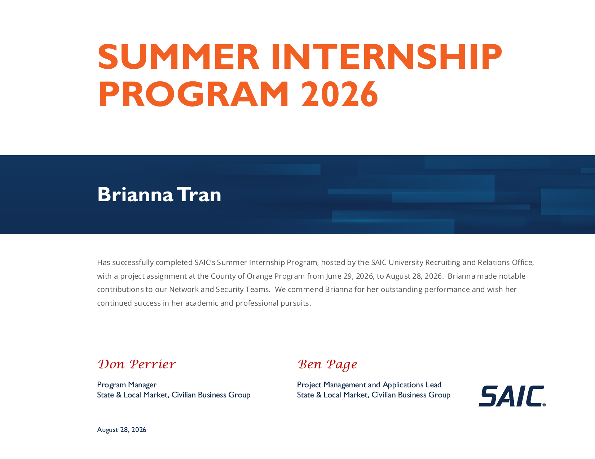
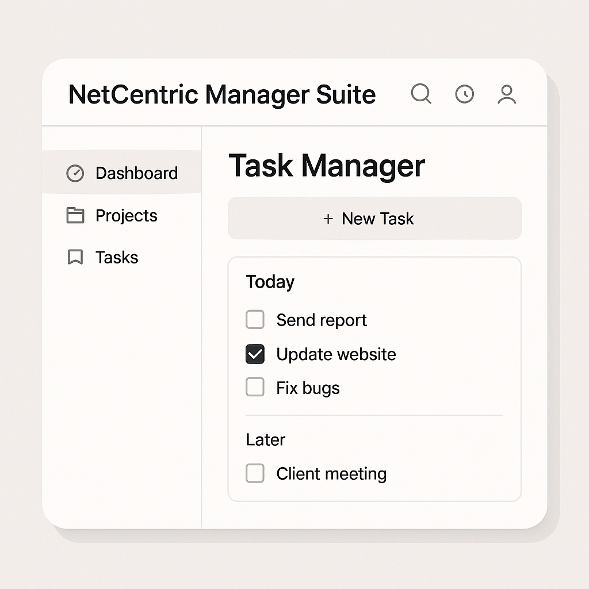
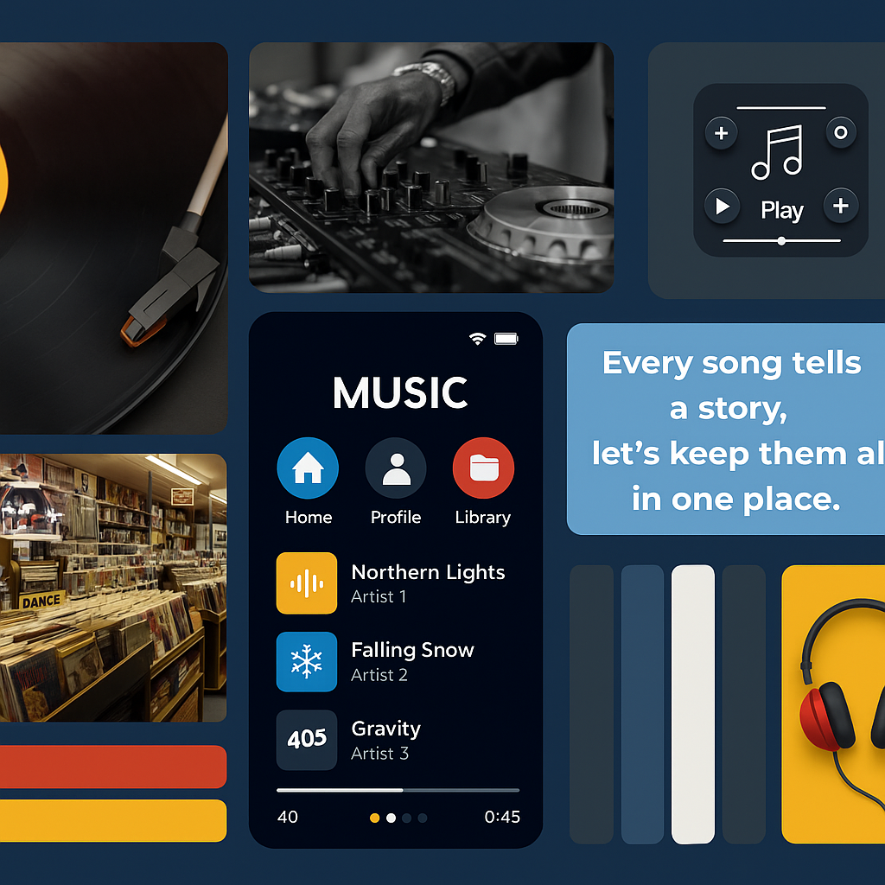
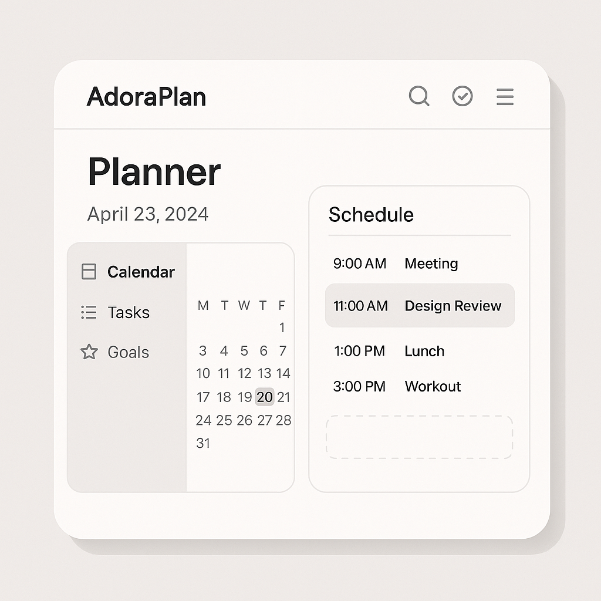
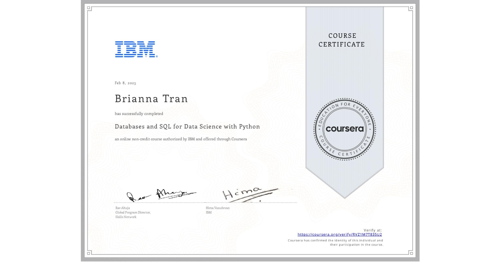
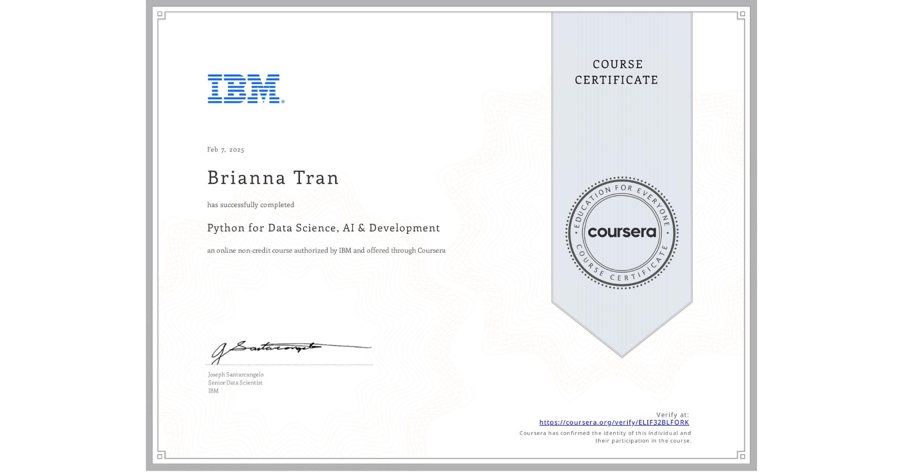

Hello, I'm Bria.
Computer Information Systems
Seattle Pacific University · Class of 2027
My background is in Computer Information Systems and data analytics, with a toolkit spanning SQL, Python, Excel, data visualization, and systems design.
On the practical side, I interned with the Network Security and Operations teams at SAIC, getting a real look at how large enterprise infrastructure operates day-to-day. Right now, I’m building on that foundation by studying for my CompTIA Security+ and preparing for the ISACA CISA exam, aiming to work in IT risk, governance, and compliance.
Outside of systems and data, I care deeply about music, creative spaces, and making sure technology actually serves people. To me, that means building and maintaining systems where security and progress don’t come at the expense of ethics, user trust, or genuine connection.
The projects here are self-directed builds and explorations driven by my own curiosity. Take a look around, and feel free to reach out if you'd like to connect!
Get In Touch →SAIC Summer Internship
Completed SAIC's Summer Internship Program with a project assignment at the County of Orange Program, contributing to the Network and Security Teams.

SAIC Summer Internship Program 2026 · June 29 – August 28, 2026 · County of Orange Program
Experience & Education
Work Experience
Technical Intern
Jun. 2026 – Aug. 2026SAIC · Santa Ana, CA (Hybrid)
- Developed a Python automation pipeline for Palo Alto Panorama that detects duplicate NAT/security rules and unused objects, generating CLI commands and JSON audit reports for human review
- Validated pipeline logic against an isolated lab instance before deployment, and completed 9+ network topology diagrams across Orange County sites using SolarWinds and SecureCRT/SSH
- Assisted with router refresh cycles by transferring bootflash images and performing firmware upgrades
- Conducted on-site AP mapping, and authored a Strata Cloud Manager vendor evaluation that informed a County of Orange procurement decision
Shift Manager
Sept. 2025 – Jan. 2026HeChaLou · Lynnwood, WA
- Oversaw operations for a Taiwanese chain store launch, coordinating workflows to improve operational efficiency
- Trained and mentored new hires on processes, improving team performance and onboarding time
- Resolved customer concerns diplomatically, reinforcing brand image and customer retention
Operations Lead
Jan. 2024 – May 2025UDDJ UW & FaireLaFlex · Seattle, WA
- Managed cross-functional teams of 10 to deliver event programming for 150+ attendees, defining KPIs and serving as stakeholder liaison for on-time, on-budget delivery
Data Analytics Projects
.png)
Global Music Trends
An interactive SQL-powered dashboard exploring how music genres, moods, and languages evolve across regions and decades. Uncovers cultural shifts in global listening habits.
GitHub →.png)
Film Success Analysis
A data-driven dashboard uncovering what makes a movie a box office hit, analyzing budget, genre, release timing, and global markets using SQL, machine learning, and real-world APIs.
GitHub →.png)
Music Profile Analytics
A personalized dashboard analyzing Spotify listening habits, from genre diversity to artist origins. Uses audio features, clustering, and visual insights to map unique taste in music.
GitHub →Project & Product Strategy
Evaide
An AI ingestion app that automates evidence classification using Azure AI and Vector Databases. Served as rotating Scrum Master, leading product discovery and Agile delivery as well as cloud security as Lead DBA, configuring firewalls and RBAC in Azure to meet governance standards. Leveraged Claude & Gemini for rapid prototyping to develop a secure Azure Blob Storage and SQL architecture.
View Project
Netcentric Manager Suite
A full-stack web app for managing dynamic lists using custom HTTP tools, Node.js, and vanilla JS. Features real-time item updates, CSV storage, and modular interfaces for streamlined client-server interaction.
GitHub →
Music Catalogue Design
A relational database system built to organize and explore music catalogs by genre, mood, and region. Includes ERD, wireframes, and SQL-backed features designed for scalable artist and track discovery.
GitHub →
AdoraPlan System
A complete system design project for managing Eucharistic Adoration schedules, including ERD, user flows, wireframes, and role-based access control. Built to streamline sign-ups and track commitments across parishes.
GitHub →Certifications
CompTIA Security+ (SY0-701)
Core security principles, threats, attacks, vulnerabilities, identity management, cryptography, network architecture, and security operations.
In Progress — Expected November 2026
Certified Information Systems Auditor (CISA)
Information systems audit process, IT governance and management, systems acquisition and implementation, operations resilience, and information asset protection.
In Progress — Candidate
Databases & SQL for Data Science with Python
Relational databases, SQL from basic to advanced, views, transactions, stored procedures, and joins for complex data analysis.
Verify Certificate ↗
Python for Data Science, AI & Development
Core Python programming, Pandas, NumPy, Jupyter Notebooks, API integration, and web scraping with Beautiful Soup.
Verify Certificate ↗
More About Me
Data as a Listening Tool
At the heart of everything I do is one guiding question: how can we listen to people better, through music, data, and technology? That question fuels both my academic journey and my creative pursuits. I'm currently diving deeper into machine learning and AI-driven projects to explore how emerging technologies can push the boundaries of music and creativity.
Problems I'm Passionate About
- Helping organizations spot rising talent early through predictive analytics
- Improving recommendation systems to reflect diverse, global audiences
- Designing tools that support culturally relevant, localized content distribution
As a second-generation Vietnamese American who has been working in service roles since I was 15, I've developed strong interpersonal skills, adaptability, and a deep sense of empathy.
Turning Vision into Execution
I'm drawn to the challenge of turning big creative ideas into scalable, real-world systems. This means streamlining workflows, aligning cross-functional teams, and designing experiments that lead to better outcomes. Outside of tech, I'm also a musician, DJ, and event curator, creating spaces where people come together around sound.
Technology as a Bridge
As AI, data systems, and emerging technologies continue to transform the creative industries, I want to help build tools that are not only cutting-edge but also equitable, culturally aware, and human-centered. Music is a reflection of who we are, where we've been, and where we're going. I would love to be part of a team building toward that future.